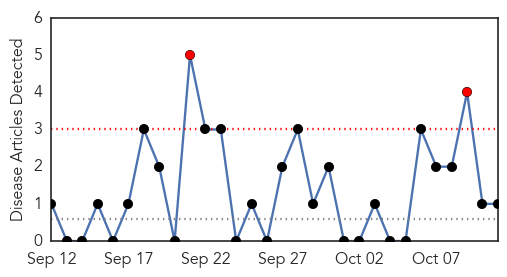
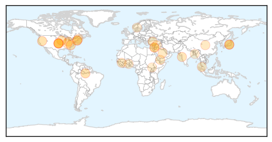

Mold/Fungal
30-Day Web Trend
2 alerts, 0 warnings

30-Day Twitter Trend
0 alerts, 0 warnings

Article Locations
Article Confidences

Top Articles:
Top Tweets:
-
No tweets found for Oct 11, 2015
Unknown
30-Day Web Trend
0 alerts, 0 warnings

30-Day Twitter Trend
2 alerts, 0 warnings

Article Locations
Article Confidences

Top Articles:
- 0.931
- Norovirus Outbreak in Reno Area Schools Sickens Over 700 Students, Faculty
- 0.931
- Norovirus Outbreak in Reno Area Schools Sickens Nearly 800
- 0.917
- Chicago Tribune
- 0.917
- Chicago Tribune
- 0.917
- Chicago Tribune
- 0.917
- Chicago Tribune
- 0.917
- Chicago Tribune
- 0.882
- Flu vaccine now available for free in Rhode Island schools
- 0.871
- What We Need to Know About E. coli
- 0.840
- Group A Streptococcus: Strep throat in Spain, Impetigo in Ohio
- 0.824
- Staff deaths at leading hospital put India's TB battle in spotlight
- 0.767
- UK HealthCare Physicians Named to 2015-16 Best Doctor's List
- 0.760
- Flu vaccine now available for free in Rhode Island schools
- 0.759
- Drive-thru flu shots set for Oct. 17
- 0.716
- Group: Treat HIV sooner
- 0.693
- Angry protest at site of deadly bomb attack in Turkey
- 0.693
- Russia, Saudi Arabia agree to cooperate in Syria
- 0.693
- More stabbings in Israel as IDF kills three Palestinians
- 0.693
- Israeli jets pound Gaza as violence escalates
- 0.693
- Islamic State group leader Baghdadi hit in airstrike, says Iraq
- 0.693
- Exile to president: Guinea’s Condé seeks second term
- 0.693
- 'Europe’s last dictator' eyes EU as Belarus heads to polls
- 0.684
- Rabies: A viral response - Nation
- 0.590
- Naturopathy, local farm and food movement share a common mindset
- 0.552
- Fear grips Yendi residents over rabies outbreak
- 0.552
- Fear grips Yendi residents over rabies outbreak
- 0.550
- Celebrating World Mental Health Day
- 0.544
- Irregularities mar Sirajdikhan Health Complex affairs
- 0.543
- Cleveland's first medical hackathon points way to better community health -- but a new business model is needed: Amy R. Sheon, Scott Frank and Christopher Kippes (Opinion)
- 0.524
- Time to save water
- 0.507
- Ending Needless Suffering in Francophone Africa
Top Tweets:
- 0.766
- After 8 days without MERS cases Saudis report 2 yday & today +3 deaths. Cases in Riyadh - vestiges of outbreak? http://t.co/dULLaNCPaG
- 0.569
- KSA reports two new MERS cases, 3 deaths in Riyadh in the last 48 hrs. Total cases now at 1253 cases, 539 deaths. http://t.co/95KHN46toc